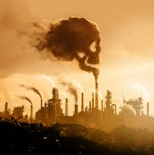
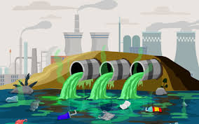
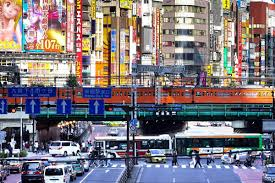

| Tipo | Ejemplo | Imagen |
|---|---|---|
| Aire | Humo de fábricas que contamina el aire |  |
| Agua | Desechos industriales y basura en ríos y lagos |  |
| Suelo | Uso excesivo de pesticidas y basura en la tierra | |
| Sonora | Ruidos fuertes de fábricas y tráfico | |
| Visual | Publicidad excesiva y basura en espacios públicos |  |